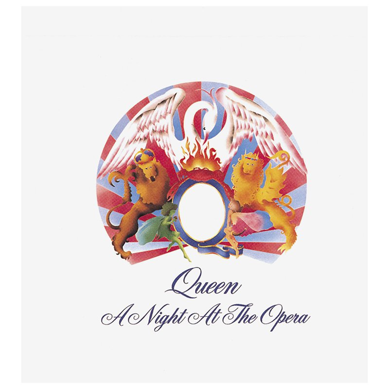
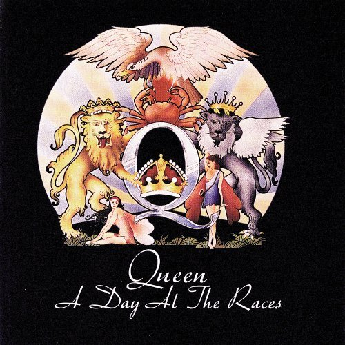

Galería dinámica de imágenes
Sin modificar el HTML, crear un array con todas las imágenes que hay en la carpeta items.
Con JavaScript obtener los elementos #anterior, #siguiente, #foto y las imágenes miniaturas.
Cuando se hace clicken alguna de las 3 fotos, el srcde la #foto debe cambiar por el de la clickeada.
Los botones #anterior y #siguiente deben cambiar las miniaturas:
- De tres en tres (ejercico-3-1.js).
- De una en una, como desplazándolas (ejercico-3-2.js).


